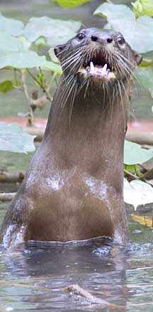
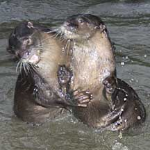
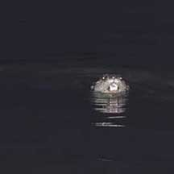
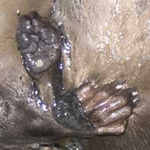
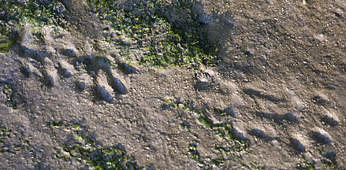
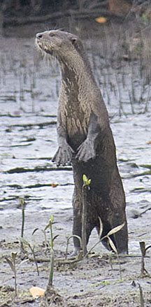
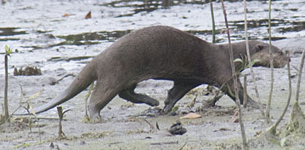

|
|
| vertebrates text index | photo index |
| Phylum Chordata > Subphylum Vertebrata > Class Mammalia |
| Smooth-coated
otter Lutrogale perspicillata Family Mustelidae updated Oct 2016 Where seen? This delightful creature is more common that we might imagine. Smooth-coated otters are often sighted in our mangroves, mudflats and coastal areas. Such as at Sungei Buloh Wetland Reserve, Pasir Ris, Pulau Ubin as well as Changi. According to Baker, in Singapore, they are also reported from the Western Catchment Area. It was previously known as Lutra perspicillata. Acccording to Sungei Buloh Wetland Reserve, The first record of the Smooth-coated otter was of a male, collected in 1938 from Lazarus Island. The second otter sighting was recorded at Sungei Buloh in 1990. According to Davison, the local population may not be strictly resident as they travel easily between Johor and Singapore across the Johor Straits. Features: Head and body to 75cm, tail to 45cm. Long body and a long tail, covered in short sleek fur. It has short limbs with webbed 'fingers' and prominent claws. The upperparts are greyish brown and the underside is buffy. Smooth-coated otters are generally social and live in pairs or family groups of parents and their young. They are active both during the day and at night. Sometimes mistaken for other marine animals. Here's more on how to distinguish an otter on Meryl Theng's Otters in Singapore blog. What does it eat? It eats mainly fish, but also turtles, crustaceans and clams and snails. Otter babies: Babies are born in a litter of 1-2, in a den dun in the river bank. The young stay with the parents in a family group for some time. Status and threats: The Smooth-coated otter is listed as 'Critically Endangered' in the Red List of threatened animals of Singapore. |
 Woodlands Park, Dec 10  Sungei Buloh Wetland Reserve, Mar 10 |
|
 Changi, May 09 |
 |
 Otter prints on mud. Chek Jawa, Jul 11 |
 Pulau Semakau, Aug 11 |
|
 Pulau Semakau, Aug 11 |
||
| Smooth-coated otters on Singapore shores |
| Photos of Smooth-coated otters for free download from wildsingapore flickr |
| Distribution in Singapore on this wildsingapore flickr map |
| 3 otters @ SBWR 30Apr2011 from SgBeachBum on Vimeo. |
| otter makantime II @ SBWR 08May2011 from SgBeachBum on Vimeo. |
| otter makantime I @ SBWR 30Apr2011 from SgBeachBum on Vimeo. |
|
Links
References
|
|
|